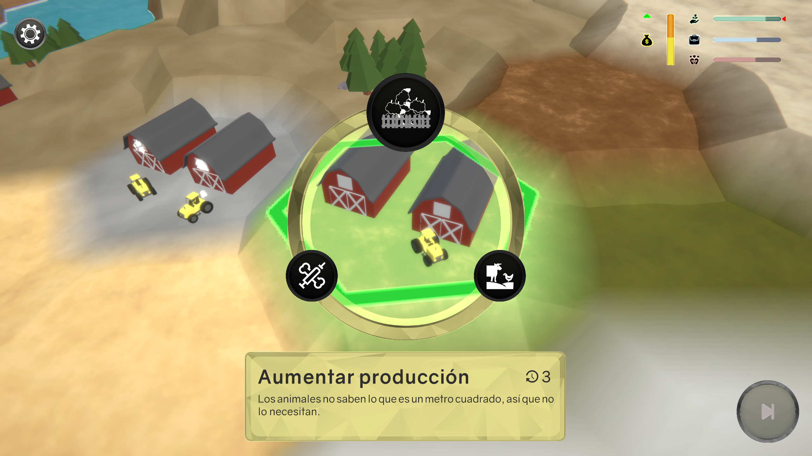

ECORRUPTION is a turn-based micromanagement videogame where you control the leader of an ecologist political party that has just been elected.
In a small world, you'll have to balance your public image, the enterprise's needs and the fragile health of the world. Choose between saving the planet, pleasing your voters' needs or falling under the enterprises' corruption.
Download the game in the following link: https://pizanagd.itch.io/ecorruption
